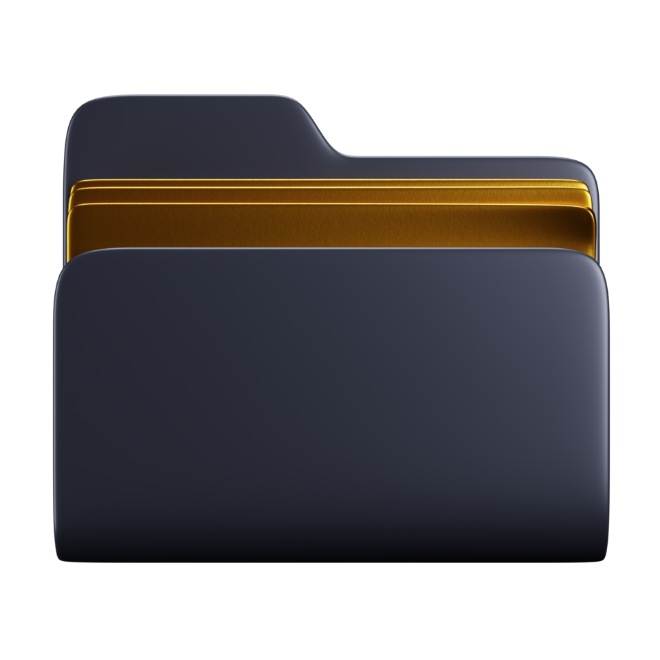

Qué es un sistema de archivos
El sistema de archivos (file system) es la forma en que el sistema operativo organiza, nombra, almacena y recupera los datos en los dispositivos de almacenamiento (discos duros, SSD, memorias USB). Define la estructura lógica (archivos, carpetas, metadatos) y las operaciones posibles sobre ellos.
Un mismo disco puede contener distintos sistemas de archivos. La elección depende del sistema operativo, el tamaño del disco y la necesidad de compatibilidad o seguridad (journaling, permisos, cifrado).
1. Sistemas de archivos principales
| Sistema | SO típico | Características |
|---|---|---|
| ext4 | Linux | Journaling, soporta archivos >2 TB, rendimiento estable. |
| NTFS | Windows | Permisos ACL, compresión, cifrado, journaling. |
| FAT32 / exFAT | Universal | Máxima compatibilidad; FAT32 limita archivos a 4 GB. |
# Linux: crear un sistema de archivos ext4 en una partición sudo mkfs.ext4 /dev/sdb1 # Montar la partición sudo mount /dev/sdb1 /mnt/datos
flowchart TD
A[Disco físico] --> B[Partición]
B --> C[Sistema de archivos]
C --> D{Tipo}
D --> E[ext4 - Linux]
D --> F[NTFS - Windows]
D --> G[FAT3
2/exFAT - Universal]
C --> H[Archivos y directorios]
H --> I[Metadatos: permisos, fechas, tamaño]
2. Operaciones básicas por línea de comandos
Las operaciones de gestión de archivos se realizan tanto en entornos gráficos (explorador de archivos) como por comandos. Los comandos más usados en GNU/Linux y, por extensión, en la terminal de Windows (WSL) son:
- cp: copiar archivos o directorios (
cp origen destino). - mv: mover o renombrar (
mv archivo.txt /tmp/). - rm: eliminar archivos (
rm -rpara directorios recursivamente). - ls, mkdir, touch: listar, crear carpetas y crear archivos vacíos.
# Copiar un directorio completo conservando atributos cp -a /home/usuario/docs /mnt/backup/docs # Mover (renombrar) un archivo mv informe.txt informe_final.txt # Eliminar de forma segura un directorio rm -ri /tmp/pruebas
mindmap
root((Gestión de archivos))
Comandos CLI
cp copiar
mv mover
rm eliminar
mkdir crear
Entorno gráfico
Explorador Windows
Nautilus Linux
Arrastrar y soltar
Buenas prácticas
Copia de seguridad
Confirmar rutas
Revisar permisos
3. Entornos gráficos
El explorador de archivos de Windows y gestores como Nautilus (GNOME) o Dolphin (KDE) ofrecen la misma funcionalidad de forma visual: copiar, mover, eliminar y cambiar propiedades. Aunque son más intuitivos, el conocimiento de los comandos es imprescindible para administración remota y automatización.
Ejemplo resuelto en clase
Caso práctico: Explicar qué es un sistema de archivos con un USB.
- Introduce un USB y ábrelo; observa que los datos se organizan en archivos y carpetas.
- Diferencia datos (lo que guardas) de metadatos (fecha, permisos, tamaño) que guarda el SF.
- Explica que el SF define cómo se reparte el espacio en bloques/unidades de asignación.
- Compara FAT32 (simple, sin permisos) con NTFS/ext4 (journaling, permisos).
graph TD DAT[Datos] --> SF[Sistema de archivos] SF --> META[Metadatos] SF --> BLOQ[Bloques]
Ejercicio para resolver (que propone el profesor al alumno): El alumno explica con su USB la diferencia entre datos y metadatos y por qué el SF importa.
Ampliación de contenido
Para entender lo anterior (puentes conceptuales)
- El sistema de archivos es "el modo en que el disco habla". El disco solo ve unos y ceros; el FS organiza eso en "archivos" y "carpetas" que tú puedes usar. Sin FS, el disco es un bloque ilegible.
- Partición ≠ sistema de archivos. La partición es la "zona del disco"; el FS es el "formato" que se le da a esa zona. Puedes tener la partición y aún así no tener FS (disco sin formatear).
- Los metadatos son "la ficha del archivo". No es el contenido, sino el nombre, tamaño, fecha y permisos. El FS guarda esos metadatos aparte del contenido.
Para profundizar en los contenidos actuales
ext4, NTFS, FAT32/exFAT. ext4 es el estándar en Linux (journaling: anota los cambios antes de hacerlos, lo que evita corrupción si se corta la luz). NTFS es el de Windows (permisos ACL finos, compresión, cifrado BitLocker). FAT32 es universal pero limitado (archivos <4 GB); exFAT quita esa limitación para memorias grandes.
Journaling importa. Un FS con journaling puede recuperarse tras un corte; uno sin él (FAT) puede quedar inconsistente. Por eso FAT32 en una memoria mal extraída a veces pide "formatear".
Comandos vs explorador. cp, mv, rm, ls, mkdir son la base en Linux y WSL. El explorador gráfico hace lo mismo "a punta de clic", pero para administración remota y scripts, la línea de comandos es imprescindible.
Montar = "darle una puerta al disco". En Linux, una partición no aparece hasta montarla en un directorio (p. ej. mount /dev/sdb1 /mnt/datos). En Windows se asigna una letra (D:); en Linux se integra en el árbol único de directorios.
Permisos y seguridad. NTFS y ext4 controlan quién puede leer/escribir/ejecutar. Eso es clave en aulas: un alumno no debe poder borrar la configuración del profe. El FS es quien lo aplica.
Revisión didáctica
- Partición y FS no son lo mismo. Tener partición no implica tener FS formateado; un disco puede estar particionado pero "sin formatear".
- FAT32 no es "mejor por ser universal". Su límite de 4 GB por archivo la hace inútil para vídeos grandes; ahí exFAT o NTFS.
- "rm -rf" no es "como la papelera". Borra sin pasar por la papelera y sin confirmación; es peligroso en rutas como
/. - Journaling no evita borrar por error. Solo protege contra corrupción por corte de luz; un
rmaccidental sí se pierde. - Montar no es "conectar un USB". Montar es asociar la partición a un punto del árbol de directorios; el USB es el soporte físico.
Hilo de aprendizaje sugerido: (1) ¿qué es un FS y por qué hace falta? → (2) partición vs FS → (3) ext4/NTFS/FAT32/exFAT y cuándo usar cada uno → (4) journaling y corrupción → (5) comandos (cp/mv/rm/ls/mkdir) vs explorador → (6) montar y permisos.
Enlaces relacionados
- Estructura de directorios
- Herramientas de administración de discos
- Criterio RA3-a: comparar sistemas de archivos
Recursos externos
Vídeos y artículos recomendados para ampliar y preparar el tema: